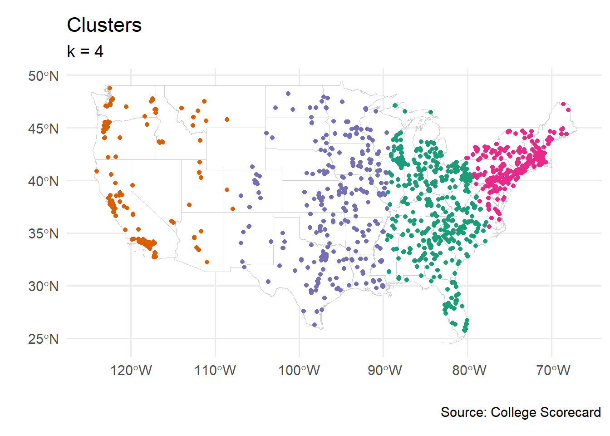

library("corrplot")
library("DiagrammeR")#easy coding of flowcharts
library("GGally") #extensions for ggplot
library("gt")
library("sf")
library("tidyclust")
library("tidymodels")
library("tidyverse") #general framework for data wrangling
# school colors
princeton_orange <- "#E77500"
princeton_black <- "#121212"
# data set: College Scorecard
# college_raw <- readr::read_csv('Most-Recent-Cohorts-Institution.csv')
# college_df <- college_raw |>
# select(INSTNM, UGDS,
# STABBR, LATITUDE, LONGITUDE,
# ADM_RATE,
# # SATMT75, SATWR75,
# C150_4, RET_FT4,
# MD_EARN_WNE_P10, ENDOWBEGIN) |>
# drop_na() |>
# filter(LONGITUDE > -125 & LONGITUDE < -67) |>
# filter(LATITUDE > 25 & LATITUDE < 49)
# readr::write_csv(college_df, "college_data.csv")
college_df <- readr::read_csv("college_data.csv")
# college_df <- readr::read_csv("https://raw.githubusercontent.com/dsollberger/sml201slides/refs/heads/main/data/college_data.csv")
states_shp <- readr::read_rds("us_states_shp.rds")SML 201
Start
Libraries and Loading the Data
- Goal: Explore topics in unsupervised learning
Objectives:
clustering
workflows
Data: College Scorecard
Today’s data comes from College Scorecard.
INSTNM: institution nameUGDS: undergraduate enrollment (number of students)LATITUDELONGITUDEADM_RATE: admission rateC150_4: completion rate (at 150% of expected time for 4-year degrees)RET_FT4: retention rate (full-time students, 4-year institutions)MD_EARN_WNE_P10: median earnings, 10 years after graduation (USD)ENDOWBEGIN: endowment (beginning of school year)
Correlation Plot
college_df |>
select_if(is.numeric) |>
cor(use = "pairwise.complete.obs") |>
corrplot(method = "ellipse",
order = "FPC",
type = "upper")k-means Clustering
Scene
states_shp |>
ggplot() +
geom_sf(color = "gray80", fill = "white") +
geom_point(aes(x = LONGITUDE, y = LATITUDE,
color = STABBR),
data = college_df) +
labs(title = "American Universities",
subtitle = "A selection of insitutions in the continental USA",
caption = "Source: College Scorecard",
x = "", y = "") +
theme_minimal(base_size = 14) +
theme(legend.position = "none")A first foray
set.seed(20241121)
k4_fit <- k_means(num_clusters = 4) |>
set_engine("stats") |>
fit(~ LATITUDE + LONGITUDE, data = college_df)Centroids
states_shp |>
ggplot() +
geom_sf(color = "gray80", fill = "white") +
geom_point(aes(x = LONGITUDE, y = LATITUDE),
color = "gray60",
data = college_df) +
geom_point(aes(x = LONGITUDE, y = LATITUDE,
color = .cluster),
data = extract_centroids(k4_fit),
size = 7) +
labs(title = "Centroids",
subtitle = "The clusters will be picked by distance to the nearest centroid",
caption = "Source: College Scorecard",
x = "", y = "") +
scale_color_brewer(palette = "Dark2") +
theme_minimal(base_size = 14) +
theme(legend.position = "none")Clusters
cluster_df <- college_df |>
mutate(cluster_num = extract_cluster_assignment(k4_fit) |>
pull())
states_shp |>
ggplot() +
geom_sf(color = "gray80", fill = "white") +
geom_point(aes(x = LONGITUDE, y = LATITUDE,
color = cluster_num),
data = cluster_df) +
labs(title = "Clusters",
subtitle = "k = 4",
caption = "Source: College Scorecard",
x = "", y = "") +
scale_color_brewer(palette = "Dark2") +
theme_minimal(base_size = 14) +
theme(legend.position = "none")
Considerations
- How do we place the centroids? Randomly?
- How do we pick the number of clusters?
Error Ratios
Try several arrangements
N <- 10 #max possible number of clusters
k_vals <- 1:N
err_ratios <- rep(NA, N)
for(i in 1:N){
kmeans_fit <- k_means(num_clusters = k_vals[i]) |>
set_engine("stats") |>
fit(~ LATITUDE + LONGITUDE, data = college_df)
err_ratios[i] <- kmeans_fit$fit$tot.withinss / kmeans_fit$fit$totss
}Scree Plot
df_for_graph <- data.frame(num_clusters = 1:N,
err_ratios)
df_for_graph |>
ggplot() +
geom_point(aes(x = factor(num_clusters), y = err_ratios),
size = 3) +
geom_line(aes(x = num_clusters, y = err_ratios)) +
labs(title = "Scree Plot",
subtitle = "Aiming to choose the number of clusters",
caption = "SML 201",
x = "number of clusters",
y = "within/total SSE ratio") +
theme_minimal(base_size = 14)
Workflow
DiagrammeR::mermaid("
graph LR
data_frame --> cross_validation
data_frame --> recipe
recipe --> workflow
spec --> workflow
grid_search --> tuning
workflow --> tuning
cross_validation --> tuning
tuning --> eval_metrics
")Tidymodels
# cross-validation folds
college_cv <- vfold_cv(college_df, v = 10)
# specification
college_spec <- k_means(num_clusters = tune())
# recipe
college_recipe <- recipe(~., data = college_df |>
select_if(is.numeric)) |>
step_normalize()
# workflow
college_workflow <- workflow(college_recipe, college_spec)
# parameter grid
kvals_grid <- grid_regular(num_clusters(), levels = 10)
# tuning
tune_results <- tune_cluster(
college_workflow,
resamples = college_cv,
grid = kvals_grid,
metrics = cluster_metric_set(sse_within_total, sse_total, sse_ratio)
)Scree Plot
tune_results |>
collect_metrics() |>
filter(.metric == "sse_ratio") |>
ggplot(aes(x = num_clusters, y = mean)) +
geom_point(aes(x = factor(num_clusters), y = mean),
size = 3) +
geom_line() +
labs(title = "Scree Plot",
subtitle = "Aiming to choose the number of clusters",
caption = "SML 201",
x = "number of clusters",
y = "within/total SSE ratio") +
theme_minimal(base_size = 14)Pairs Plot
college_df |>
select_if(is.numeric) |>
GGally::ggpairs(title = "American Universities")set.seed(20241121)
k4_fit <- k_means(num_clusters = 4) |>
set_engine("stats") |>
fit(~., data = college_df |>
select_if(is.numeric))
college_k4 <- college_df |>
mutate(cluster_num = extract_cluster_assignment(k4_fit) |>
pull())college_k4 |>
GGally::ggpairs(columns = c(2, 6:9),
aes(color = cluster_num)) +
scale_color_brewer(palette = "Dark2")Classification
Out of interest, we now seek smaller cluster sizes (i.e. fewer colleges in each cluster), so let us explore an arrangement with \(k = 10\) clusters.
set.seed(20241121)
k10_fit <- k_means(num_clusters = 10) |>
set_engine("stats") |>
fit(~., data = college_df |>
select_if(is.numeric) |>
mutate(across(where(is.numeric), scale)))
college_k10 <- college_df |>
mutate(cluster_num = extract_cluster_assignment(k10_fit) |>
pull())p_clust_id <- college_k10 |>
filter(INSTNM == "Princeton University") |>
pull(cluster_num)college_k10 |>
filter(cluster_num == p_clust_id)# A tibble: 6 × 11
INSTNM UGDS STABBR LATITUDE LONGITUDE ADM_RATE C150_4 RET_FT4 MD_EARN_WNE_P10
<chr> <dbl> <chr> <dbl> <dbl> <dbl> <dbl> <dbl> <dbl>
1 Yale … 6639 CT 41.3 -72.9 0.0457 0.978 0.981 100533
2 Harva… 7973 MA 42.4 -71.1 0.0324 0.978 0.977 101817
3 Massa… 4638 MA 42.4 -71.1 0.0396 0.949 0.990 143372
4 Princ… 5527 NJ 40.3 -74.7 0.057 0.973 0.970 110066
5 Unive… 10572 PA 40.0 -75.2 0.065 0.961 0.984 111371
6 Stanf… 7761 CA 37.4 -122. 0.0368 0.951 0.983 124080
# ℹ 2 more variables: ENDOWBEGIN <dbl>, cluster_num <fct>| The Princeton Cluster | ||||||
|---|---|---|---|---|---|---|
| of similar universities | ||||||
| university | state | enrollment | admit_rate | grad_rate | retention | income |
| Harvard University | MA | 7973 | 3.24 | 97.77 | 97.69 | 101817 |
| Massachusetts Institute of Technology | MA | 4638 | 3.96 | 94.94 | 98.98 | 143372 |
| Princeton University | NJ | 5527 | 5.70 | 97.32 | 97.05 | 110066 |
| Stanford University | CA | 7761 | 3.68 | 95.11 | 98.31 | 124080 |
| University of Pennsylvania | PA | 10572 | 6.50 | 96.09 | 98.37 | 111371 |
| Yale University | CT | 6639 | 4.57 | 97.81 | 98.10 | 100533 |
| Source: College Scorecard | ||||||
college_k10 |>
filter(cluster_num == p_clust_id) |>
select(INSTNM, STABBR, UGDS,
ADM_RATE, C150_4, RET_FT4,
MD_EARN_WNE_P10) |>
rename(university = INSTNM,
state = STABBR,
enrollment = UGDS,
income = MD_EARN_WNE_P10) |>
mutate(admit_rate = 100*ADM_RATE,
grad_rate = 100*C150_4,
retention = 100*RET_FT4,) |>
select(university, state, enrollment,
admit_rate, grad_rate, retention,
income) |>
arrange(university) |>
gt() |>
cols_align(align = "center") |>
tab_footnote(footnote = "Source: College Scorecard") |>
tab_header(
title = "The Princeton Cluster",
subtitle = "of similar universities"
) |>
tab_style(
style = cell_text(weight = "bold"),
locations = cells_column_labels()
) |>
tab_style(
style = list(cell_fill(color = "#E77500"),
cell_text(color = "#121212",
weight = "bold")),
locations = cells_body(rows = university == "Princeton University")
)Quo Vadimus?
- Precept 10
- CLO Assessment
- Exam 2 (December 5)
Footnotes
(optional) Additional Resources
Session Info
sessionInfo()R version 4.4.1 (2024-06-14 ucrt)
Platform: x86_64-w64-mingw32/x64
Running under: Windows 10 x64 (build 19045)
Matrix products: default
locale:
[1] LC_COLLATE=English_United States.utf8
[2] LC_CTYPE=English_United States.utf8
[3] LC_MONETARY=English_United States.utf8
[4] LC_NUMERIC=C
[5] LC_TIME=English_United States.utf8
time zone: America/New_York
tzcode source: internal
attached base packages:
[1] stats graphics grDevices utils datasets methods base
other attached packages:
[1] lubridate_1.9.3 forcats_1.0.0 stringr_1.5.1 readr_2.1.5
[5] tidyverse_2.0.0 yardstick_1.3.1 workflowsets_1.1.0 workflows_1.1.4
[9] tune_1.2.1 tidyr_1.3.1 tibble_3.2.1 rsample_1.2.1
[13] recipes_1.0.10 purrr_1.0.2 parsnip_1.2.1 modeldata_1.4.0
[17] infer_1.0.7 dplyr_1.1.4 dials_1.3.0 scales_1.3.0
[21] broom_1.0.7 tidymodels_1.2.0 tidyclust_0.2.3 sf_1.0-17
[25] gt_0.11.1 GGally_2.2.1 ggplot2_3.5.1 DiagrammeR_1.0.11
[29] corrplot_0.94
loaded via a namespace (and not attached):
[1] DBI_1.2.3 rlang_1.1.4 magrittr_2.0.3
[4] flexclust_1.4-2 furrr_0.3.1 e1071_1.7-14
[7] compiler_4.4.1 vctrs_0.6.5 RcppZiggurat_0.1.6
[10] lhs_1.2.0 crayon_1.5.3 pkgconfig_2.0.3
[13] fastmap_1.2.0 ellipsis_0.3.2 backports_1.5.0
[16] labeling_0.4.3 utf8_1.2.4 rmarkdown_2.28
[19] prodlim_2024.06.25 tzdb_0.4.0 bit_4.5.0
[22] Rfast_2.1.0 modeltools_0.2-23 xfun_0.48
[25] jsonlite_1.8.8 parallel_4.4.1 R6_2.5.1
[28] stringi_1.8.4 RColorBrewer_1.1-3 parallelly_1.37.1
[31] rpart_4.1.23 Rcpp_1.0.12 iterators_1.0.14
[34] knitr_1.48 future.apply_1.11.2 Matrix_1.7-0
[37] splines_4.4.1 nnet_7.3-19 timechange_0.3.0
[40] tidyselect_1.2.1 rstudioapi_0.17.0 yaml_2.3.8
[43] timeDate_4032.109 codetools_0.2-20 listenv_0.9.1
[46] lattice_0.22-6 plyr_1.8.9 withr_3.0.2
[49] evaluate_1.0.1 archive_1.1.8 future_1.33.2
[52] survival_3.6-4 RcppParallel_5.1.9 ggstats_0.7.0
[55] units_0.8-5 proxy_0.4-27 xml2_1.3.6
[58] pillar_1.9.0 KernSmooth_2.23-24 stats4_4.4.1
[61] foreach_1.5.2 generics_0.1.3 vroom_1.6.5
[64] hms_1.1.3 munsell_0.5.1 globals_0.16.3
[67] class_7.3-22 glue_1.8.0 tools_4.4.1
[70] data.table_1.16.2 modelenv_0.2.0 gower_1.0.1
[73] visNetwork_2.1.2 grid_4.4.1 ipred_0.9-14
[76] colorspace_2.1-1 cli_3.6.3 DiceDesign_1.10
[79] fansi_1.0.6 lava_1.8.0 gtable_0.3.5
[82] GPfit_1.0-8 sass_0.4.9 digest_0.6.35
[85] classInt_0.4-10 farver_2.1.2 htmlwidgets_1.6.4
[88] htmltools_0.5.8.1 lifecycle_1.0.4 hardhat_1.4.0
[91] bit64_4.5.2 MASS_7.3-60.2
Example Callout Block
note, tip, warning, caution, or important